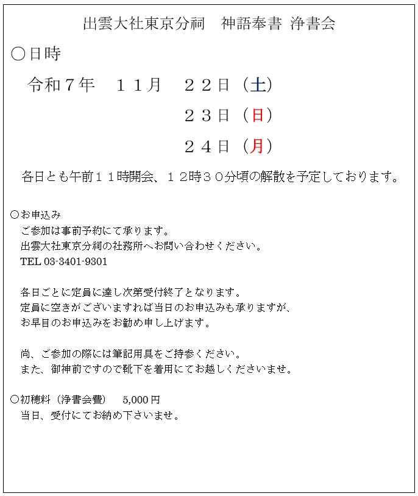
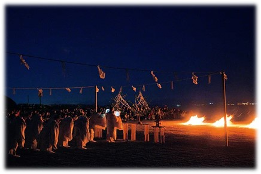
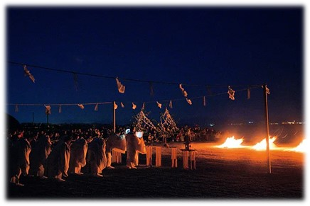

神語奉書浄書会のご案内
神語奉書浄書会のご案内
投稿日: 2025.10.17

大神様の御恵みによって生かされ、ご先祖様から受け継いだ御魂を宿す我々は、常に幽世からの慈愛に寄り添われて日々の暮らしの中に在ります。
豊穣への感謝を捧げる霜秋の候に「幸魂 奇魂 守給 幸給」の神語の祈りに思いを深め、心清々しく和楽の恵みに結ばれますよう浄書会のご案内を申し上げます。
出雲大社（島根県）での「献穀祭」

毎年１１月２３日には宗祠と仰ぎます出雲大社（島根県）にて午前１０時より「献穀祭」が、午後７時よりは「古傳新嘗祭」が斎行されます。献穀祭は年間を通じて３つのみの「大祭」のひとつであり、御神前にうず高く初穂（新米）をお供えしてお仕えされる収穫感謝のおまつりです。また、古傳新嘗祭は神人共食の古儀を今に伝える、浄闇の中でお仕えされる出雲大社特殊神事であり最たる重儀のひとつです。
今回の浄書会はこの佳日１１月２３日とその前後に開催いたしますが、今年は１１月２９日が旧暦１０月１０日にあたり、出雲大社（島根県）では神在月の出雲の地に八百万神が集われる「神迎祭」が厳粛かつ盛大に斎行されます。
神迎神事（島根県出雲市 稲佐浜にて）
こうした時節での東京分祠での浄書会開催であることに因みまして、浄書の後の講話では献穀祭や古傳新嘗祭にまつわるお話や、八百万神が出雲に集われる由縁など、「神在月」にまつわる出雲信仰についても、お話をさせていただきます。
神在期間に宗祠へ参詣なされる方々も、参詣かなわぬ方々も、明治以来東京分祠にお鎮まりの大神様の御分霊の御前にて祈りと学びを深められ、大神様の紡がれる幸縁に結ばれますことを念願しております。皆様方のご参加をお待ち申し上げております。

皆様が浄書なされました神語奉書は大切にお預かりして、宗祠と仰ぎます島根県の出雲大社にて、神楽殿の御神前へお供え致します。

神前にお供えされた後は、出雲大社神楽殿の神殿至近にございます「神語奉書奉納殿」へお納め致しまして、永く大切に保管されます。
 

お問い合わせ
出雲大社東京分祠
〒106-0032 東京都港区六本木7-18-5
TEL: 03-3401-9301
受付時間: 午前9時～午後5時